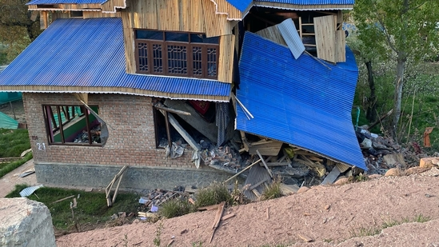

Pahalgam attack: Houses of 5 terrorists razed by security forces in J&K
By HT News Desk | Reported by Mir Ehsan

The Jammu and Kashmir administration on Saturday demolished the house of several terrorists in the wake of the April 22 Pahalgam terror attack, which killed 26 people.
The law enforcement authorities razed the homes of three terrorists on Friday night, one each in Kulgam, Shopian and Pulwama. ALSO READ: Who are 3 terrorists involved in gruesome Pahalgam attack? J&K Police reveals identities On Friday, the houses of two Lashkar-e-Toiba terrorists were demolished. Officials said that they were conducting searches inside the houses of two LeT terrorists Adil Hussain Thoker and Asif Sheikh, when the explosives already kept inside the houses went off. Adil had illegally travelled to Pakistan in 2018, where he reportedly received terror training before returning to Jammu and Kashmir last year. Pahalgam terror attack LIVE coverage The house of Lashkar-e-Toiba terrorist Haris Ahmad, who was active since 2023, was destroyed in a blast in the Kachipora area of Pulwama. The security forces also demolished the house of Ahsan ul Haq Sheikh, who was trained in Pakistan in 2018 and re-entered the Kashmir Valley. Army chief reviews security situation in J&K On Friday, Army chief General Upendra Dwivedi reviewed the security situation in Jammu and Kashmir in his first visit to the Union territory since the Pahalgam attack. He was also briefed on the actions being taken by the formations against terrorists inside their territory and the Pakistan Army's attempts to violate the ceasefire along the Line of Control. Since the terror attack, there has been an increase in ceasefire violations by Pakistan, to which the Indian forces have given a befitting reply. According to the officials, multiple Pakistan Army posts carried out firing on the intervening night of April 25 and 26, which led to Indian troops retaliating with small arms. No casualties have been reported.